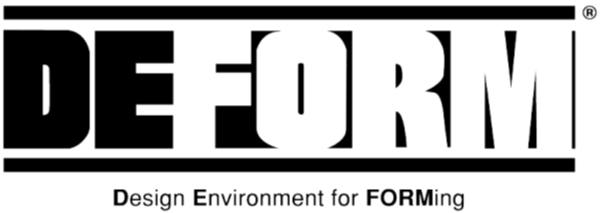
DEFORM® v14.0 SP2 (PC & Linux)
Release Notes
December 20th, 2024
Acknowledgements
Translation for international version has been performed by:
Release Notes for the DEFORM v14.0.2 (v14.0 SP2) release
The key highlights of the new and improved features in V14.0 SP2
Selected New Developments in DEFORM V14.0 SP2
The following are important issues resolved in v14.0 SP1
Highlights of New and Enhanced Features in v14.0
Selected New Developments in DEFORM v14.0
Important GUI related and functional improvements in DEFORM v14.0
Important FEM developments/improvements in DEFORM v14.0
Important FEM related bug fixes in DEFORM v14.0
Important AMG improvements in DEFORM v14.0
Important AMG related bug fixes in DEFORM v14.0
Material library update in DEFORM v14.0
List of document updates in DEFORM v14.0 SP2
List of document updates in DEFORM v14.0
List of New and Extended Keywords in DEFORM v14.0 and V14.0 SP2
Release Notes for the DEFORM v14.0.2 (v14.0 SP2) release
SFTC provides up-to-date release notes for the DEFORM system v14.0 SP2. This article contains information about recent important change, bug fixes, and updates to existing features.
DEFORM V14.0 SP2 supports both Windows and Linux operating systems. The supported Linux distributions include CentOS 6, CentOS 7, and RHEL 8.
DEFORM V14.0 SP2 Enhancements: DEFORM V14.0 SP2 introduces system enhancements based on customer requests and addresses bug fixes identified from feedback on versions V14.0 and V14.0 SP1.
DEFORM V14.0 SP2 Package: The DEFORM V14.0 SP2 package includes License Manager (LM) V14.0 SP2 and DEFORM Service Control (SC) V14.0 SP2.
DEFORM V14.0 Password Requirement: This version of DEFORM requires a V14.0 password to operate. DEFORM V14.0 SP2 will not work with a DEFORM V13.1 password. Please contact SFTC to obtain the V14.0 password file.
Upgrading to DEFORM V14.0 SP2: If you are currently using DEFORM V14.0 SP1 (or any older version such as V14.0 or V13.1 SP1) and upgrading to V14.0 SP2, you do not need to uninstall the earlier versions of DEFORM. However, it is mandatory to uninstall the previous version of License Manager and install License Manager V14.0 SP2.
The key highlights of the new and improved features in V14.0 SP2
The highlights of the DEFORM V14.0 SP2 system were presented at the Fall 2024 DEFORM User Group Meeting. For a detailed description, please refer to the materials from that event.
The ALE Linear Friction Welding (LFW) model, presented at the Fall 2024 DEFORM Users Group Meeting, has been officially introduced in V14.0 SP2. This model significantly reduces computational costs in 3D ALE linear friction welding simulations.
Tube Piercing Enhancements: Added a new shoe geometry primitive, stopping plane functionality, and movement control support for the mandrel and shoes.
Cogging Enhancements: Added support for importing and exporting pass table data in CSV file format.
Measurement Tool Enhancements: Added features for movable and editable labels, as well as options to edit or delete measurements via the context menu.
Enhanced Visibility: Improved dimension display functionality in the "Show Dimensions" feature.
Under-fill Display Enhancements: Improved display for oil/gas trap simulation.
Report Generation Enhancements: Added a new export option for metal flow.
Color Bar Display Enhancement: Optimized default font size for better readability on high-resolution monitors. Also improved the color bar context menu for easier title, font size, and color adjustments.
Support for DEFORM 3D Objects in MS PowerPoint: Developed an export function for 3D models (geometry, mesh, SV). DEFORM objects can now be imported into PowerPoint 365 or PowerPoint 2024.
Load-Stroke Summation Plot in Post-processor: A new "Plot Type" option has been added to the Graph (Load-Stroke) window, enabling the plot of the summation of selected objects.
Load-Stroke Superimpose Plot in Post-processor: A Superimpose tool has been introduced to compare different databases. When used with the Summation plot in the load-stroke tool, it allows for graphing multiple projects on the same chart.
Equations Output Enhancements: Improved through multiple bug fixes.
Customization of Windows Start Menu for DEFORM Shortcuts: A new "Start Menu" tab has been added to the DEFORM Setup, allowing users to select which applications are displayed in the Start menu.
License Expire Warning: Warning information is now available in DEFORM Setup, DEFORM License Monitor, and the GUI Main as the license expiration approaches.
DEFORM Installer Localization: Starting from V14 SP2, the installer is fully translatable, and the selected language will carry over for use in DEFORM.
Multiple Ram Hydraulic Press: A min stopping speed option has been added to the modeling of multiple ram hydraulic presses.
DEFORM API update: The API now supports saving multiple geometry formats from the last step of the database using the "Save multiple geometry formats for last step.py" file.
Beta Version of V14.1 Meshing Program (AMG): The beta version of the V14.1 meshing program (AMG) serves as a backup mesher in the V14.0 SP2 release. The 3D backup mesher enhances surface curvature mesh weighting control, resulting in improved fine mesh resolution around surface edges and fillets.
Optimize the performance of the DEF_SIM_64.EXE (FEM simulation engine) on Intel 12th Generation and Later CPUs: Create a file named DEF_PRIORITY.DAT in the problem folder. On the first line of the file, specify the desired priority level: enter "1" for Above Normal or "2" for High. This adjustment enhances simulation performance on Intel 12th Generation and later CPUs with hybrid architectures by ensuring the DEF_SIM_64.EXE gets allocated to performance cores for optimal performance.
Linux platform specific enhancements
Provide backup meshing support during paralleling remeshing on Linux.
The stability of the meshing program and procedures has been improved on Linux.
Fixed a bug in flowline tracking for multi-pass shape rolling on Linux.
Preview/Open Editor now supports for the lower case files of “.log” or “.msg” in GUI Main on Linux.
Selected New Developments in DEFORM V14.0 SP2
Some of the highlights of V14.0 SP2 DEFORM system were presented in the Fall 2024 DEFORM User Group meeting. The selected V14.0 SP2 enhancements include:
Linear friction welding (LFW) model have been developed & introduced.
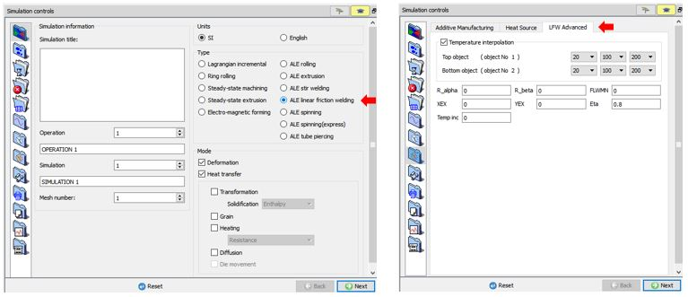
Added ALE linear friction welding as a new simulation type in the Simulation Controls dialog.
Load-stroke graph in POST now includes new plot type options, enabling users to be able to plot the summation of forces in the graph.
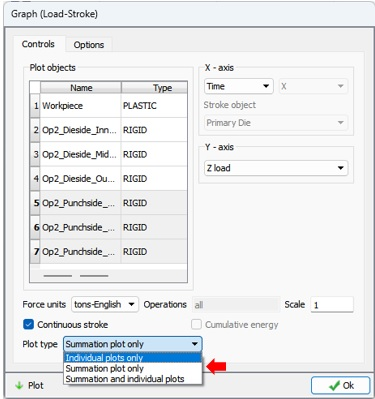
New plot type options of “Individual plots only”, “Summation plot only”, and “Summation and individual plots”.
Tube piercing enhancements: Added new geometry primitive for the shoe object, stopping plane support, movement control for mandrel and shoes.
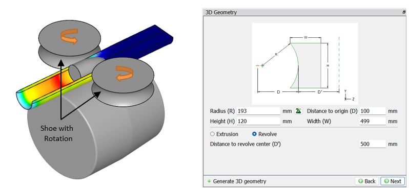
New geometry primitive (Extrude, Revolve) for shoe object in tube piercing setup.
Multiple-ram hydraulic press: Added a new stopping criterion with minimum speed, “Minimum stopping speed” option has been added.
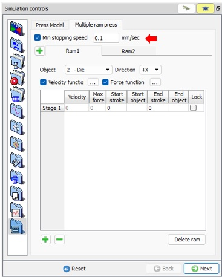
New option of “Min. stopping speed” in Multi-ram press in Simulation Controls.
Enhanced underfill display: When the gas trap is activated via DEF_GAS.DAT, the underfill region becomes larger due to the gas trap in closed die forging. To improve the underfill display, a new color definition for the gas-trapped under-fill region has been introduced. The default color for the gas-trapped region is sky blue.
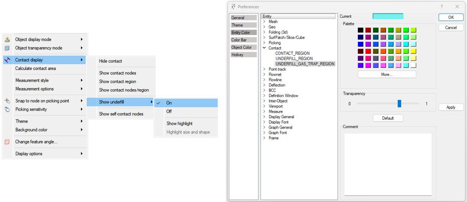
Underfill gas trap region (UNDERFILL_GAS_TRAP_REGION) is added in Preference dialog.
New 3D Object/Model Data Export Function to MS PowerPoint: A new export function for 3D object/model data to MS PowerPoint (365 or 2024) has been developed and is available under the File menu.
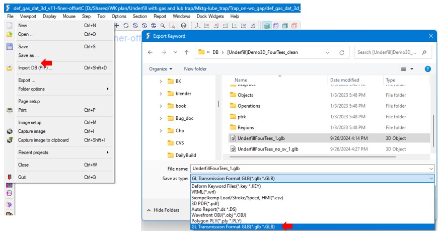
License Expiration Warning: A license expiration warning has been implemented in DEFORM License Monitor and DEFORM Setup dialogs. In GUI Main V14 SP2, an alert will appear at launch when the license is set to expire in less than four weeks.
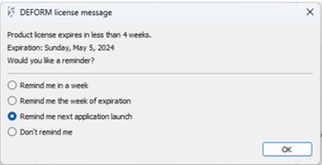
DEFORM license message from GUI Main
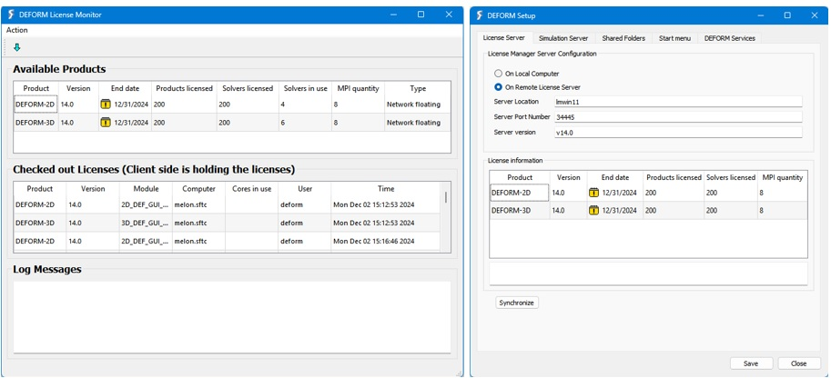
License expiration warning in DEFORM License monitor (left) and in DEFORM Setup (right).
Start Menu Tab in DEFORM Setup: In DEFORM V14 SP2, a Start Menu tab has been added to DEFORM Setup. Users can now add or remove DEFORM shortcuts from the Windows Start menu and select which applications are displayed.
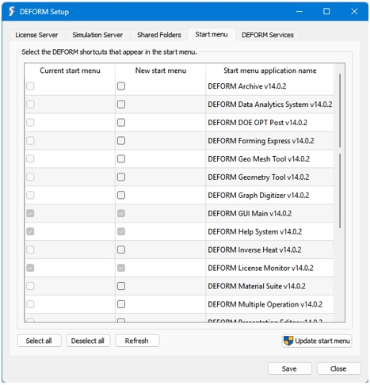
Selecting or deselecting applications in DEFORM Setup.
DEFORM installer localization. The V14 SP2 installer is fully translatable by our distributors and the selected language will carry over for use in DEFORM system.
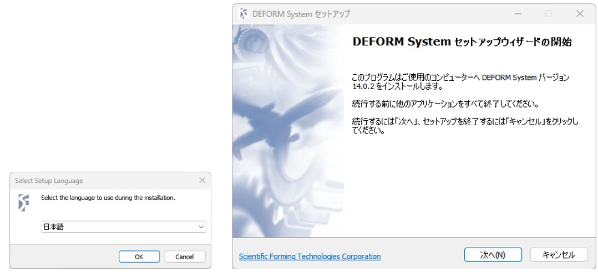
Language selection during the installation in DEFORM installer (shown with Japanese).
The following are important issues resolved in v14.0 SP1:
Resolved a critical backward compatibility issue reported in v14.0, where the "Read from DB" object type, when used in a subsequent operation within a multiple operation (MO) setup, might cause an error under certain conditions in the MO environment (Integrated Manufacturing Process model setup). It is necessary to upgrade to v14.0 SP1 immediately to avoid this potential backward compatibility issue.
Resolved an issue in v14.0 related to the object tree refresh/update that occurred when switching between different object types.
Resolved an issue in v14.0 related to non-English character support. When the UTF-8 (Unicode Transformation Format - 8-bit) character encoding standard was not enabled in the Windows OS settings, the handling of folder and file names containing non-English characters encountered issues in the DEFORM system v14.0.
Along with the fix mentioned above, we have significantly improved non-English character support in various areas, including project names, object names, simulation titles, operation names, and more.
Resolved an issue where object name changed to “Object 1” from “Workpiece” when object type was changed from “Read from DB” to “Plastic” in the second operation.
Resolved an issue where the "Copy Material Properties" function failed to copy certain Electrical/Magnetic material properties to another material.
An issue where the generation of PDF reports failed, when DEFORM was running in Japanese language mode, was fixed by updating to the latest version of the MiKTeX package.
Resolved a crash issue that occurred while using the Mirror Merge function.
Resolved an issue where the Reference Temperature for the Environment Fluid (CFD) object type was lost.
DEFORM system v14.0 SP1 includes a Microsoft Visual Studio 2019 project file (DEF_SIM_64_USR_Intel.vfproj) for compiling FEM user routines using the Intel Fortran compiler.
The Intel® Fortran Compiler Classic (ifort) is now deprecated and will be discontinued in October 2024. Intel recommends that customers transition to the Intel® Fortran Compiler (ifx) for continued support on Windows and Linux.
Thus, DEFORM v14.0 SP1 includes two new batch files: “build-FEM-USR-PC-64bit-intel-compiler-ifx.bat” and “Intel_ifx_build_all_dll_command.bat” for both 2D and 3D, respectively.
We appreciate the feedback from v14.0 users that helped us address these issues above
Highlights of New and Enhanced Features in v14.0
Majority of the highlights of v14.0 SP2 DEFORM system were presented in the Spring 2024 DEFORM User Group meeting and the Fall 2023 DEFORM User Group meetings.
Partial domain solver which was introduced in the Spring 2023 DEFORM Users Group meeting has been tested/validated and now officially available in v14.0/v14.0 SP1. It will help to reduce a computational cost in incremental/rotary forming process simulations like spinning, flow forming, and orbital forming.
CFD solver is available with GUI implementation for gas quenching simulation in v14.0/v14.0 SP1. CFD flow simulation can generate the heat transfer coefficient (HTC) profile and then quenching/distortion simulation can be conducted using the calculated HTC. 3D Lab document for gas quenching is available in v14.0 official release.
Induction heating model now can model B-H curve and hysteresis loss. New state variables (magnetic field intensity H, magnetic flux density, B) have been added to better present induction heating simulation results.
New constitutive models of Elasto-plastic porous model, General Neo-Hookean model (Hyperelastic) have been added.
New yield criteria of Barlat Anisotropy 1991 has been introduced.
New hardening model of Yoshida Uemori has been introduced.
Hydraulic press movement enhancement. Multiple ram press movement model has been newly developed and introduced.
3rd rotation movement option is add in 3D.
Ring rolling model enhancement. It now can support user-selected ring diameter location for stopping and movement control usage. Advanced movement control option like a PID control has been added.
Shape rolling model enhancement. It now can support Tet mesh (with Boolean and Force remesh options). Various user-enhancement requests were implemented for easier setup of multi-pass shape rolling process.
2D adaptive contact bcc has been developed in 2D FEM. It can be helpful in forging simulation with multiple deforming dies.
Mechanism-based dynamic recrystallization of Aluminum alloys has been developed.
Precipitation hardening model (based on classical nucleation and growth theories) has been developed.
Crystal plasticity for texture model has been developed.
For easier handling of many inter-object relations, Examine tool for inter-object relations and Explode view have been developed.
Thermal (Proximity) contact has been introduced for accurate temperature prediction in sheet forming applications with thermal calculation.
Many new user-friendly enhancements have been made in Process Monitor, DEFORM Setup, License Monitoring tool.
Selected New Developments in DEFORM v14.0
Some of the highlights of v14.0 DEFORM system were presented in the Fall 2023 DEFORM User Group meeting and in the Spring 2024 DEFORM User Group meeting. The selected v14.0 enhancements include:
Multi-Ram hydraulic press model have been developed in order to support various punch movement schedules.
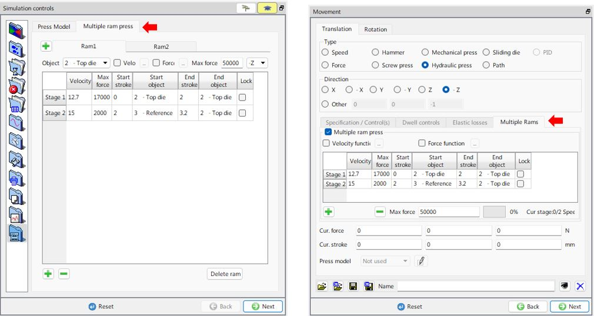
Multiple-ram hydraulic press interface in Simulation control and Movement pages.
Induction heating now can model B-H curve, relationship between the magnetic field strength (H) and the magnetic flux density (B), and hysteresis loss with new state variables (magnetic field intensity H, magnetic flux density, B) display support.
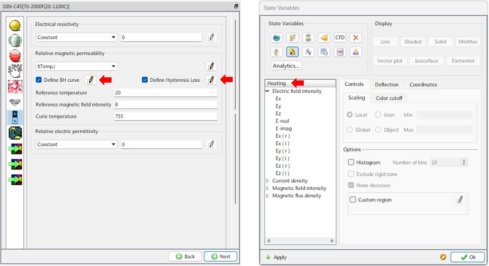
Ring rolling model enhancement. User-specified ring diameter (inner or outer) location for stopping control is implemented. Axial roll movement as a function of ring diameter is implemented. Also, mandrel movement can be defined as PID control, a ring growth speed as a function of ring diameter.
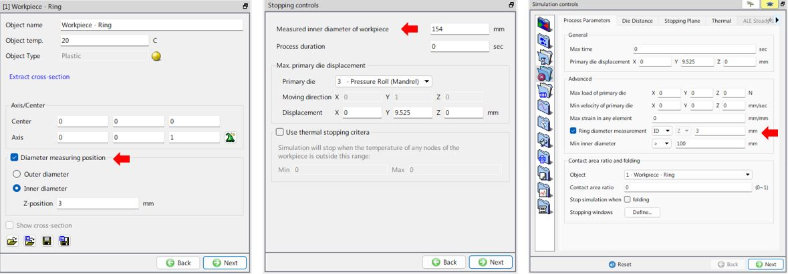
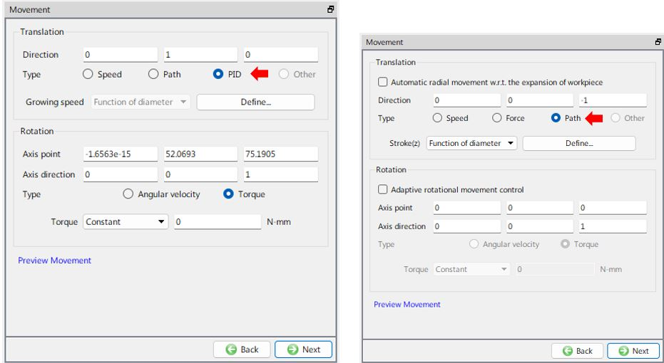
PID control, growing speed of the ring as a function of ring diameter, for Mandrel movement (left), and Z-dir. movement of Axial roll as a function of ring diameter (right).
Multiple enhancements have been made in Shape rolling in order to provide a streamlined mutli-pass rolling process setup in more convenient way. User can choose a starting pass no. of 2.5D multipass rolling simulation, and environment setting can be customized for each pass. For Lagrangian rolling, Tet mesh is now supported and workpiece object can be imported.
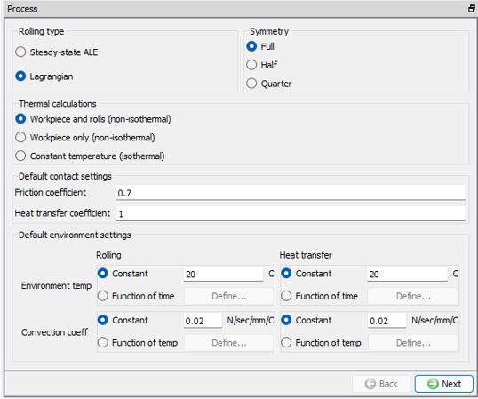
Process page with default contact settings and default environment settings.
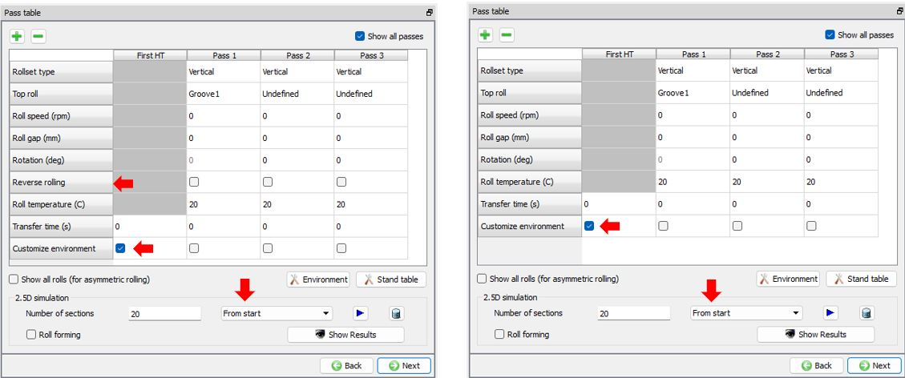
Pass table shown for Lagrangian rolling (left) and for ALE rolling (right).
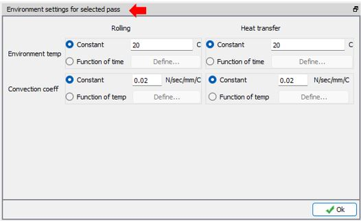
Environment settings for selected pass (directly accessible from Pass table).
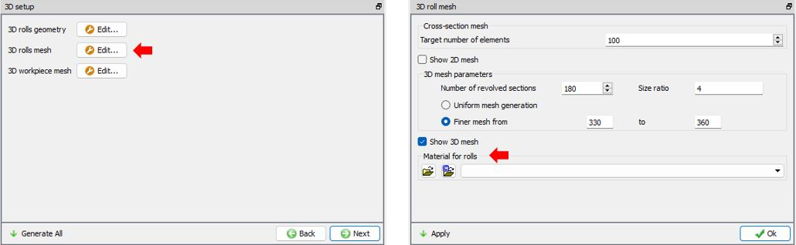
3D Setup page in ALE (left) and 3D Roll mesh page for non-isothermal rolling (right).
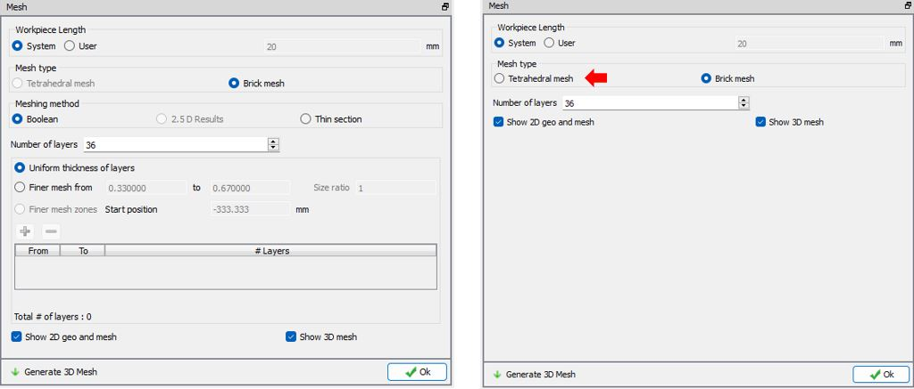
3D Workpiece mesh page for Lagrangian rolling (left) and ALE rolling (right)
CFD solver has been developed for fluid flow simulation and its GUI integration into DEFORM system now allows gas quenching simulation. CFD flow simulation can generate the heat transfer coefficient (HTC) profile and then quenching/distortion simulation can be conducted using the calculated HTC.
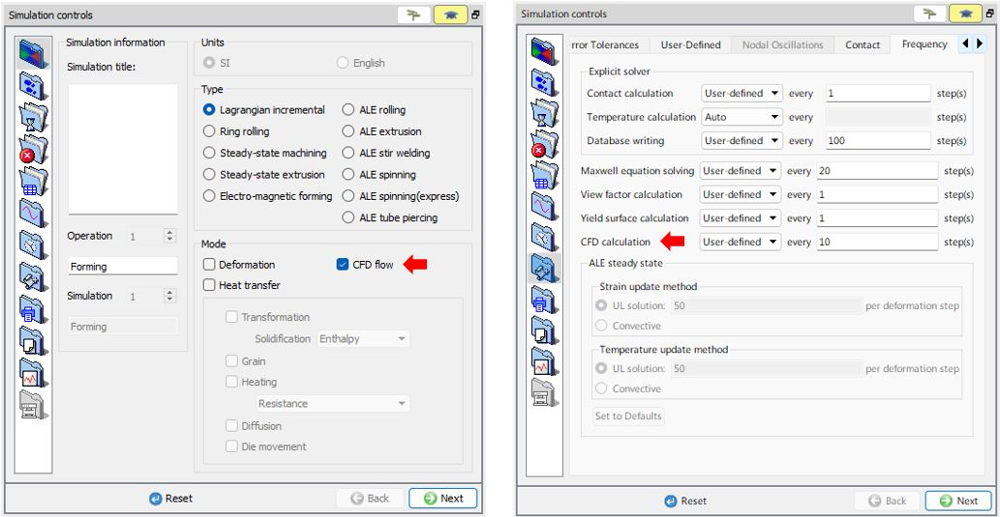
New CFD flow solver option and frequency control at Simulation Controls dialog.
Partial domain solver has been developed for incremental rotary forming processes like spinning, flow forming, and orbital forming in order to reduce a computational cost.
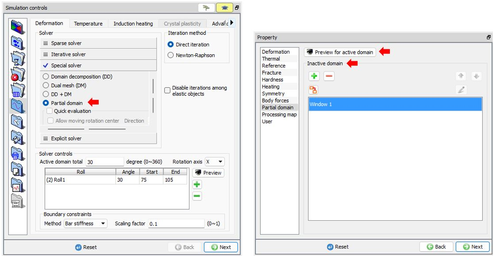
Partial domain solver with an optional quick evaluation (left, Simulation Controls page) with Preview function of partial domain and Inactive domain window (right, Property page).
Here are the other selected enhancements available in Pre-processor.
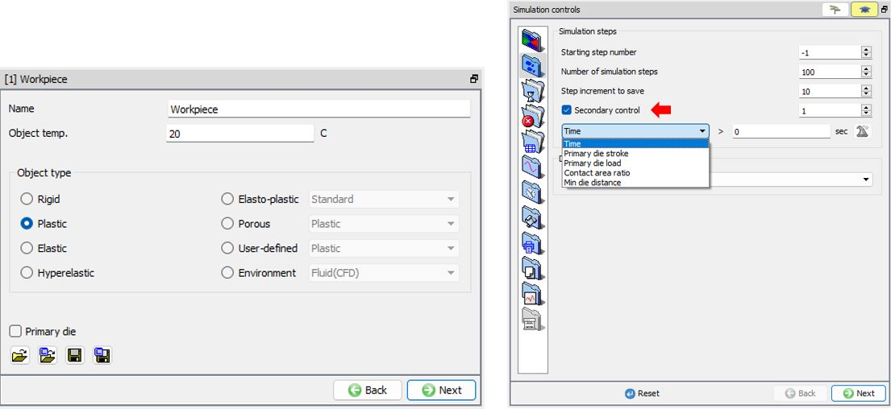
Re-designed object page with available object types and element types (left) and Secondary control in Simulation controls page (right).
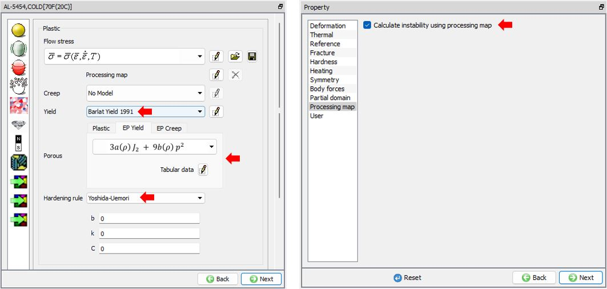
Processing map, EP porous, Barlat Yield 1991 yield model, Yoshida-Uemori hardening model in Material dialog (left) and Instability calculation for processing map in Property page (right).
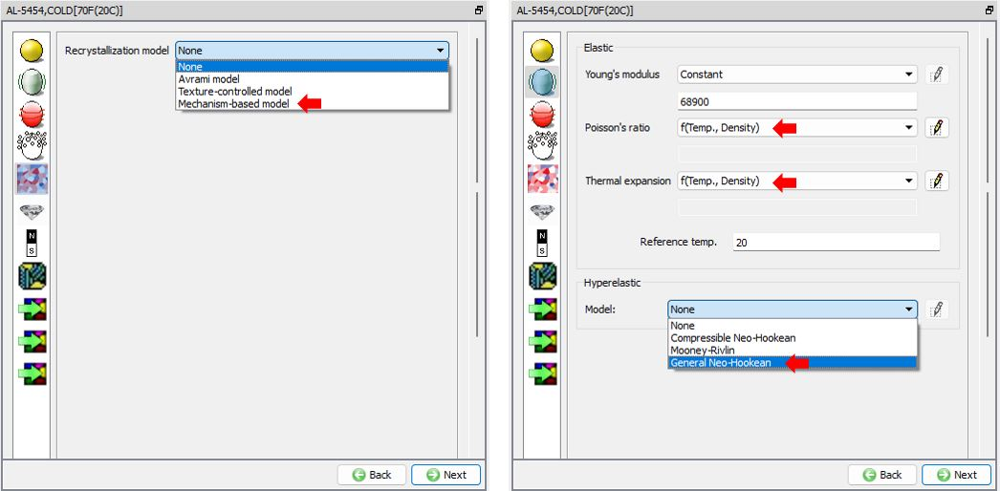
Mechanism-based recrystallization model (Grain modeling, CDRX) (left), and Poisson’s ratio and Thermal expansion as a function of temperature and density (right), and General Neo-Hookean hyperelasticity model (right) in Material page.
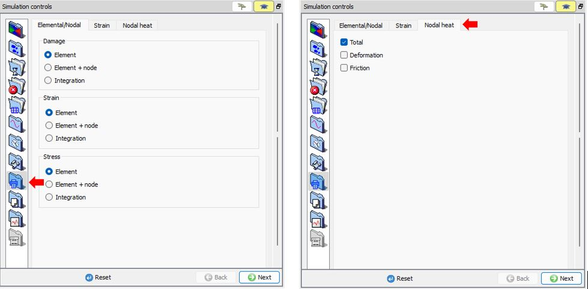
New output control page (left), and nodal heat output options (deformation, friction) (right).
DEFORM License Monitor now displays “Product licensed”, “Solver licensed”, and “Solvers in use”.
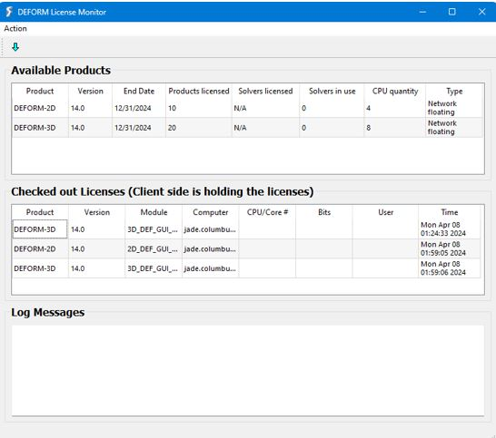
DEFORM Process Monitor comes with useful filtering functions for monitoring job status.
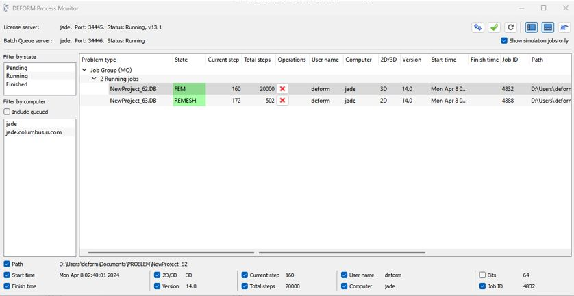
DEFORM Setup now displays the connected DEFORM License server version number and the “DEFORM version number”, “Product licensed”, and “Solver licensed” in password file. It comes with the improved simulation server page. GeoCAD server
status is now monitored.
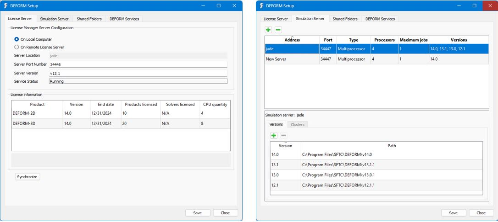
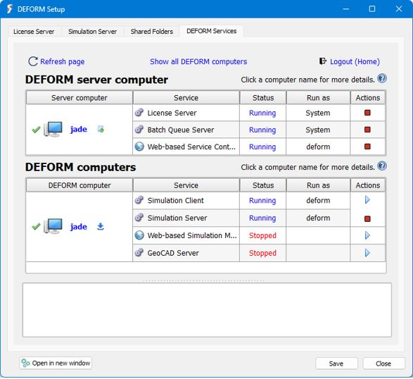
Important GUI related and functional improvements in DEFORM v14.0
GUI Main
Improved stability & performance
Pre-Processor
(Simulation Controls)
Partial domain solver
Max load stopping criterion
Secondary control for step saving
Ring diameter stopping criterion
(Material)
Voce hardening
Flow stress =f(strain,density,temp)
Barlat Yield 1991
Yoshida-Uemori hardening
Mechanism-based recrystallized model (grain)
Processing map
General Neo-Hookean (Hyper-elasticity)
(Geometry)
Refine Tool
Construction by subtraction
(Mesh)
2D local remesh for brick mesh
Improved GUI behavior for brick meshing
(Boundary condition)
Shrink-fit for bolt assembly
Symmetry bcc for 2D induction heating
Fluid flow bcc: Inlet/outlet, and wall
(Movement)
Multi-ram movement in Hydraulic press
PID control for movement (ring rolling)
3rd Rotation (3D)
(Inter-object)
Exploded view
Examine tool
2D adaptive contact
Thermal contact, HTC = f(gab)+f(pressure)
Post-Processor
Enhanced load-stroke curve for multiple operation
Flowline tracking for multi-pass ALE rolling
Flowline tracking for CFD model
Enhanced point tracking for ALE multi-pass rolling (with workpiece rotation)
Load-stroke curve, Summary graph enhancements (for ring rolling)
Nodal heat state variables: deformation heat, frictional heat
CFD state variables: calculated heat transfer coefficient, calculated heat flux
Induction heating state variables: Electrical field intensity (E), Current density (I), Magnetic field intensity (H), Magnetic flux intensity (B)
Shape Rolling
Tet mesh support in Lagrangian rolling.
Workpiece import for Lagrangian rolling.
Continue run for 2.5D from a certain pass.
Customize environment setting to each pass
Reverse rolling in Pass table.
Workpiece rotation (LAG) in Pass table.
3D roll mesh/material assignment for multipass.
Ring Rolling
User-define ring diameter stop control.
Mandrel movement (PID control), ring growing speed as a function of diameter.
Axial roll movement (Path), z-stroke as a function of diameter.
Spinning
Solver type and object type selection control for tube piercing and spinning/flow forming setup.
Cogging
Boolean between passes support with tet mesh workpiece.
Tool Life Study
Improved tool life prediction.
Data Analytics
Graph plot (scatter, line, response surface) improvement.
DOE/OPT Study
SNR (Signal-to-noise ratio) curve support.
License Enhancement
Improved stability of license modules/services.
DEFORM Setup (License server version, License information, improved GUI layout on Simulation server page, GeoCAD server status)
License Monitor (Product licensed, Solver Licensed, Solvers in Use)
Process Monitor (improved visibility with display item on/off control, filtering)
System General
Language translation has been improved in DEFORM system.
Important FEM developments/improvements in DEFORM v14.0
(2D) The adaptive contact BCC has been implemented in 2D FEM. This option can be used between multiple deforming dies to prevent unexpected node leaking.
(2D) The default Maxwell equation solving frequency for 2D induction heating simulations has been changed from 20 to 1. Now by default 2D FEM will calculate Maxwell equation every step.
(3D) For Intel CPU equipped with Performance cores(P-cores) and efficiency cores(E-cores) architecture, DEFORM 3D FEM can now always utilize the P-cores with the control file DEF_PCORECTL.DAT in the working directory to maximize the computation speed.
(3D) Crystal plasticity for texture model has been implemented in 3D FEM.
(3D) 3D Elasto-plasitc Tet elements with mixed formulation has been improved. With enhanced strain formulation, 3D mini Tet elements simulation now has better convergence behavior and more accurate stress calculation results.
(3D) Inward flow displacement state variable display has been added for 3D Ring Rolling simulation.
(3D) 3rd Rotation for die movement control has been implemented in 3D FEM.
(3D) For the current Tet element porous model, the volumetric strain is calculated based on the pressure interpolation, which sometimes leads to inaccurate results. New option to calculate volumetric strain based on velocity fields has been implemented to improve solution accuracy. This option can be activated by using DAT file DEF_PVSTR.DAT.
(3D) In DEFORM v13.1, SPRLOOP.DAT is introduced for 3D FEM to prevent the sliding die spring from looping beyond a set number of times. In DEFORM v14 this function will be activated by default with the maximum loop number set to 2.
(2D&3D) The robustness of FEM engine compiled by Intel Fortran Compiler has been improved.
(2D&3D) The general Neo-Hookean hyperelastic model has been implemented for both 2D and 3D FEM
(2D&3D) Grain modeling of "Continuous Dynamic Recrystallization (CDRX)" and "Geometric Dynamic Recrystallization (GDRX)" has been implemented for aluminum alloys in both 2D and 3D FEM in DEFORM v14.
(2D&3D) Precipitation and strength modeling for aluminum alloy has been implemented in both 2D and 3D FEM in DEFORM v14.
(2D&3D) Elasto-plastic porous material model has been implemented for both 2D and 3D, and user can now set up this new model through the DEFORM v14 GUI.
(2D&3D) State variable updating for fracture elements have been improved for both 2D and 3D during element deactivation. In previous versions, damage value would continue to increase for already deactivated elements, and introduce the error to elements nearby through interpolation if remeshing happens.
(2D&3D) New Hardening rule of Yoshida-Uemori model has been implemented in both 2D and 3D FEM.
(2D&3D) In DEFORM v14, heat transfer coefficient can now be defined as function of pressure and gap, and function of temperature for Non-isothermal simulation in both 2D and 3D FEM. Thermal contact tolerance is now available in both 2D and 3D.
(2D&3D) The die load stopping criteria has been improved in both 2D and 3D FEM. When the primary die load is close to the specified maximum die load, contact time sub-stepping will be turned on automatically, and the simulation will utilize the updated time step size to stop at the exact die load value.
(2D&3D) For gas/lube trapping simulation, user can now use DEF_GAS_PAIR.DAT to select the trapping definition between different objects. This function is available in DEFORM 3D FEM since v13.1, and available in DEFORM 2D FEM since v14.
Important FEM related bug fixes in DEFORM v14.0
(2D) Fixed a bug in 2D FEM for non-isothermal axisymmetric simulation type regarding the thermal calculation from relative rotation. In previous versions, if user defines relative rotation in the Inter-object thermal data page, this input value may lost during simulation.
(2D) Fixed a bug in 2D FEM that may cause 2D MPI job to hang or stop unexpected on a new machine when DEFORM v13.1.1 is installed.
(2D) Fixed a bug in 2D data interpolation for sticking contact BCC. In previous versions, the sticking contact BCC may not be completely interpolated during remeshing.
(2D) Fixed a bug in 2D FEM that may cause 2D MPI simulation hanging when job is finished.
(2D) Fixed a bug in 2D FEM that may cause incorrect emissivity calculation in mixture materials.
(2D) Fixed a bug in 2D fracture element deletion for state variable interpolation. In previous versions, if user select integration point output, the state variable interpolation may not be correct after element deletion.
(3D) Fixed a bug in 3D FEM where the nodal coordinate update due to contact cannot be activated by using the “Do not update” option in the inter-object data page for ALE shape roll simulation.
(3D) Fixed a bug in 3D data interpolation for multiple material group information. In previous versions, ALE simulation with multiple material group may lose material group info after remeshing.
(3D) Fixed a bug in 3D Ring Rolling simulation with JMAK grain modeling that may cause incorrect fractional value for grain data output “evolution mode” and previous step deformation.”
(2D&3D) Fixed a bug in DEFORM 2D&3D FEM regarding reference point update for the hammer die movement type. In previous versions, the reference point update on the counterblow of a hammer die was not consistent if press stretch was present.
(2D&3D) Fixed a bug in DEFORM 2D&3D FEM regarding contact ratio stopping criteria. In previous versions if the user specifies 1 as contact ratio stopping criteria, the simulation may not stop even if workpiece reaches full contact due to too tight error tolerance.
(2D&3D) Fixed a bug in die distance stopping criteria. In previous versions, nodal coordinate update due to contact generation may lead to the object reference point pass the stopping plane unexpectedly, and cause the simulation fail to stop.
Important AMG improvements in DEFORM v14.0
(2D) 2D mesher has been improved to handle multiple boundary and material group problems. In current version, 2D mesher can now handle geometry with more than 100 geometry loops.
(2D) 2D mapped mesh generation with specified density distribution has been improved. This function can be activated with DAT file MAP.DST in the working directory. For more information on how to use this function please contact SFTC.
(3D) In DEFORM v14, brick mesh 2D cross section local remeshing based on window definition has been implemented. This new function works for both the revolved and extruded type of brick mesh.
(3D) In DEFORM v14, brick mesh for sheet application can now support mesh window density definition.
Important AMG related bug fixes in DEFORM v14.0
(2D) Fixed a bug in 2D remeshing procedure border extraction. In previous version, when master and slave objects have very similar mesh configuration, border extraction results may be incorrect.
(2D) Fixed a bug in 2D remeshing procedure that the 2D local remeshing based on window and merge overlapping mesh function may not work if the remeshing workpiece is not object#1.
(3D) Fixed a bug in 3D brick remeshing that may cause problem for object with revolved type geometry and solid center. In previous version, if the 2D cross section has little change, there may be a problem during brick remeshing.
(3D) Fixed a bug in 3D Tet remeshing with rotational symmetry BCC. In previous version, if remeshing object has rotational symmetry BCC, geometry feature may get lost during remeshing if fold presents.
(3D) Fixed a bug in 3D extruded type brick mesh generation with only 1 layer of elements. In previous version, initial brick mesh generation may fail if all the brick mesh nodes have symmetry BCC.
Material library update in DEFORM v14.0
Fixed the BetaMaterials - Waspaloy(Grain) inaccurate temperature definition in the function data of peak strain and dynamic recrystallization(kinetics and grain size).
Fixed missing phase transformation data for JIS-SNC815(HeatTreatment) in English unit material keyword under Steel folder.
Fixed missing diffusion data for 12Cr_Martensitic_Stainless_Steel in English unit material keyword under Stainless_steel folder.
Updated the flow stress source data reference for some of the Aluminum material keywords
Fixed incorrect German Standard Material name for Aluminum 6061 related keywords.
The material flow stress of superalloy INCONEL-718-11[1700-2050F(925-1120C)] has been modified to consider flow softening.
List of document updates in DEFORM v14.0 SP2
The following are the major document updates in v14.0 SP2.
|
Category |
Location |
Description |
|
Pre-processor |
20. Inter-object data definition |
Added Examination and Explode view |
|
Lab |
(New) Shape rolling Lab3 |
Lagrangian rolling setup with Tet element |
|
Porous lab |
Forming of roller bearing race using a porous material |
|
|
Applications |
Deformation texture lab |
Modified w.r.t. setup procedure |
|
(New) Cartridge case drawing lab |
2D Cartridge case drawing lab |
|
|
Technical Notes |
Technical notes available in DEFORM User Area |
Added technical notes with links for PDF and ZIP file. |
List of document updates in DEFORM v14.0
The following are the major document updates in v14.0.
|
Category |
Location |
Description |
|
Pre-processor |
9.5 Simulation controls |
Partial domain solver setting |
|
16.10 Object Properties |
Partial domain |
|
|
Simulator |
23.4 DEFORM Simulator |
Process Monitor |
|
Operation Templates |
29.1 Cogging manual |
Die positioning method |
|
43.1 Shape rolling |
v14.0 enhancements |
|
|
42.1 Ring rolling |
v14.0 enhancements |
|
|
Applications |
(New) 2D CFD lab |
2D Turbulent flow |
|
(New) 3D CFD lab |
3D Gas quenching |
|
|
(New) Multipass spinning lab |
Quick Evaluation method |
|
|
(New) CP-FEM Lab |
Crystal plasticity for texture prediction |
List of New and Extended Keywords in DEFORM v14.0 and V14.0 SP2
|
No |
Keyword |
Category |
Ver. |
Description |
|
1 |
OBJTYP (Extended) |
Object |
v14.0 |
Induction heating - Air Environment (type 11) |
|
2 |
PMEAB |
Material |
v14.0 |
Added Magnetic permeability types (=5,11,14,15) |
|
3 |
BHCURB (New) |
Material |
v14.0 |
BH curve (magnetic flux intensity vs flux density) |
|
4 |
HYSIS |
Material |
v14.0 |
Hysteresis curve (hysteresis loss) |
|
5 |
SOLMTD (Extended) |
Sim. Ctrl. |
v14.0 |
Partial domain solver (type 10) |
|
6 |
WPAXIS (Extended) |
Object |
v14.0 |
Partial domain solver settings (WPAXIS, type 11) |
|
7 |
MRMPRS (New,3D) |
Object |
v14.0 |
Multi-ram (hydraulic) press model |
|
8 |
TRANS (Extended) |
Sim. Ctrl. |
v14.0 |
CFD: Simulation control (type 7) |
|
9 |
ENVMOD |
Sim. Ctrl. |
v14.0 |
CFD: Environment temperature (type 1, f(time)) |
|
10 |
OBJTYP |
Object |
v14.0 |
CFD: Fluid (type 10) |
|
11 |
FRQNCY (Extended) |
Sim. Ctrl. |
v14.0 |
CFD: Calculation frequency (type 7) |
|
12 |
DFLMAX (New) |
Sim. Ctrl. |
v14.0 |
CFD: Step control |
|
13 |
WPAXIS |
Object |
v14.0 |
CFD: Buoyance-driven flow (WPAXIS, type 5, gravity) |
|
14 |
BCCFLO |
Object |
v14.0 |
CFD: Turbulent constraint type (type 1, BCCFNC) (type 2, FLVAR) |
|
15 |
FLVAR |
Object |
v14.0 |
CFD: Turbulent SV (Kinetic energy, Dissipation rate) at nodes |
|
16 |
BCCFFN |
Object |
v14.0 |
CFD: Turbulent flow constraint function definition |
|
17 |
ECCDEF |
Object |
v14.0 |
CFD: Flow bcc, wall definition (type 20) |
|
18 |
ECPRES |
Object |
v14.0 |
CFD: Flow bcc, for various wall types |
|
19 |
ECHCFN |
Object |
v14.0 |
CFD: Calculated heat transfer coef. boundary condition function |
|
20 |
ECFLFN |
Object |
v14.0 |
CFD: Calculated heat flux boundary condition function |
|
21 |
ECCHTC |
Object |
v14.0 |
CFD: Calculated heat transfer coef. (on faces) |
|
22 |
ECCFLB |
Object |
v14.0 |
CFD: Calculated heat flux (on faces) |
|
23 |
PMCONS |
Material |
v14.0 |
EP Porous : Extension of Porous model |
|
24 |
PMYLD |
Material |
v14.0 |
EP Porous : Yield |
|
25 |
PMCRP |
Material |
v14.0 |
EP Porous : Creep |
|
26 |
FSTRES |
Material |
v14.0 |
EP Porous: Flow stress = f(strain, density, temp (type 17) |
|
27 |
YOUNG |
Material |
v14.0 |
EP Porous : Young’s Modulus = f(density, and so on) |
|
28 |
EXPAND |
Material |
v14.0 |
EP Porous : Thermal extension = f(density, and so on) |
|
29 |
POISON |
Material |
v14.0 |
EP Porous : Poisson’s ratio = f(density, and so on) |
|
30 |
HYPREL |
Material |
v14.0 |
Hyperelasticity: General Neo-Hookean (type 3) |
|
31 |
GENGEO (New) |
Action |
v14.0 |
DEFORM-API |
|
32 |
HDNRUL |
Material |
v14.0 |
Yoshi-Uemori hardening model |
|
33 |
YLDS |
Material |
v14.0 |
1st back stress for Yoshida-Uemori |
|
34 |
YLDS2 |
Material |
v14.0 |
2nd back stress for Yoshida-Uemori |
|
35 |
ANISO |
Material |
v14.0 |
Barlat Yield 1991 (type 7) |
|
36 |
PRCMAP |
Material |
v14.0 |
Processing Map: map data in material property |
|
37 |
PMPOBJ |
Object |
v14.0 |
Processing Map: calculation options |
|
38 |
EFFMAP |
Object |
v14.0 |
Processing Map: power efficiency and instability at elements |
|
39 |
GRAIN |
Material |
v14.0 |
Grain model (CDRX) |
|
40 |
GRNDAT |
Material |
v14.0 |
Grain model (CDRX) (type 6) |
|
41 |
SIZEMD |
Object |
v14.0 |
Grain model (CDRX) |
|
42 |
SIZESH |
Object |
v14.0 |
Grain model (CDRX) |
|
43 |
TTTD |
Inter-material |
v14.0 |
Precipitate hardening (type 18) |
|
44 |
HDNPHA |
Material |
v14.0 |
Precipitate hardening |
|
45 |
HDNEST |
Material |
v14.0 |
Hardness : precipitate (type 4) |
|
46 |
TXTURE |
Material |
v14.0 |
CP FEM (texture information) |
|
47 |
CPCTRL |
Sim. Ctrl. |
v14.0 |
CP FEM (simulation control data) |
|
48 |
TXTCPV |
Object |
v14.0 |
CP FEM (internal state variables) |
|
49 |
TXTODF |
Object |
v14.0 |
CP FEM (Orientation distribution function) |
|
50 |
LMAX |
Sim. Ctrl. |
v14.0 |
Max. load stopping criterion with tolerance |
|
51 |
STPINC |
Sim. Ctrl. |
v14.0 |
Secondary DB step saving control |
|
52 |
RNGDIA |
Object |
v14.0 |
Ring rolling, ring diameter definition (OD, or ID with position) |
|
53 |
MOVCTL |
Object |
v14.0 |
Ring rolling, PID movement control (type 12) |
|
54 |
ANGMO3 |
Object |
v14.0 |
3rd Rotation movement (3D) |
|
55 |
CNTRA3 |
Object |
v14.0 |
3rd Rotation movement (3D) |
|
56 |
FSTRES |
Material |
v14.0 |
Added flow stress (type 16) for Voce hardening model |
|
57 |
IHTCOF |
Inter-object |
v14.0 |
Thermal/Proximity contact, HTC = f(gap)+f(pressure) |
|
58 |
SEPRES (2D) |
Inter-object |
v14.0 |
2D adaptive contact bcc |
|
59 |
WPAXIS |
Object |
v14.0 |
WPAXIS (type 10) for object transformation (shape rolling) |
|
60 |
CPYCNT |
Action |
v14.0 |
Copy contact (inter-object) data |
|
61 |
NDHOUT |
Sim. Ctrl. |
v14.0 |
Nodal heat output option |
|
62 |
NDHOUT |
Sim. Ctrl. |
v14.0.2 |
Linear friction welding(type 14) |
Comments & Questions
The user may feel free to contact SFTC (support@deform.com) for any feedback or concern about this product at any time.